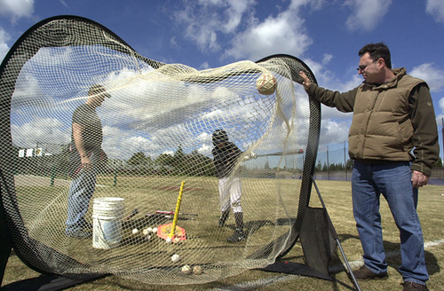
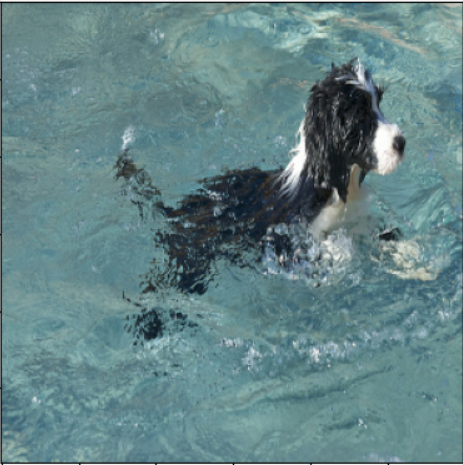
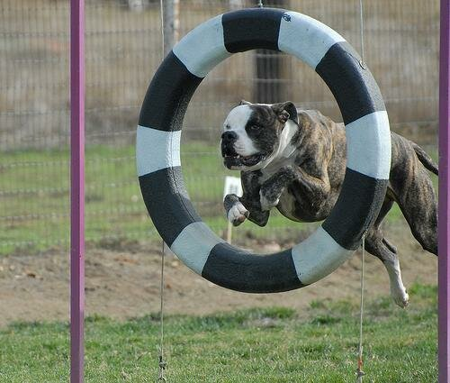

FrameToPhrase reads an image and writes what it sees — using ResNet‑101 visual features, soft attention, and an LSTM decoder trained on Flickr8k.
Upload an image"a dog runs through the snow"
"a man in a black wetsuit is surfing"
ResNet‑101 extracts a rich 2048‑dim feature map from your image.
Bahdanau soft attention focuses on relevant image regions word by word.
An LSTM decoder generates a natural language caption, token by token.
"a man in a black wetsuit is surfing"
"keyboard with bright and enlarged keys, possibly for a vision impaired person"

"a man and a dog are playing with a large bubble"

"a black and white dog is swimming in a pool"

"a black and white dog is running through the grass"
"a dog runs through the snow"